Pimply
phyllid nudibranch
Phyllidiella
pustulosa
Family Phyllidiidae
updated
May 2020
Where
seen? This nudibranch with clusters of bumps is often encountered on our
Southern shores, on coral rubble and reefs.
Features: 4-5 cm long, small ones
about 1cm can be quite common on some shores. Body long, hard with
bumps (called tubercles) that are clustered in groups. The bumps may
be pink, red, grey, green or blue. There is a coloured margin around
the edge of the body. The short rhinophores are black. There is no
stripe along the underside of the foot. The black background forms
more of a networked pattern. In other similar looking phyllid nudibranchs,
the black background forms lines. |

Kusu Island, May 05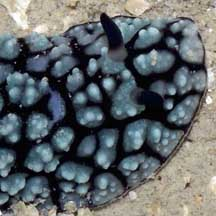
Coloured margin
around the body edge. |
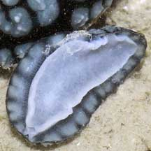
Pulau Hantu,
Feb 06
 Gills on the
sides of the body.
Gills on the
sides of the body. |
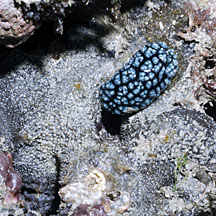
Terumbu Raya,
Jul 11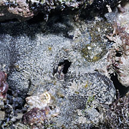 Bare patch under the nudibranch - was it eating the sponge? |
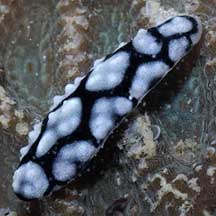
Tiny ones about 1cm are sometimes seen.
Pulau Hantu, Mar 06 |
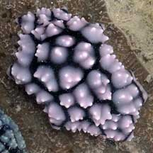
Some have pink bumps.
Pulau Hantu, Mar 06 |
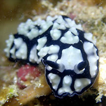
Some have pale blue bumps.
Beting Bemban Besar, Jun 19
Photo shared by Jianlin Liu on facebook. |
| Pimply
phyllid nudibranchs on Singapore shores |
| Other sightings on Singapore shores |
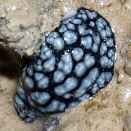
Tanah Merah Ferry Terminal, Jun 22
Photo shared by Loh Kok Sheng on facebook. |
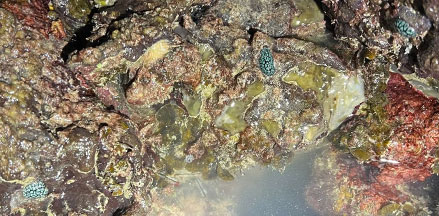
East Coast Park (B), Nov 25
Photo
shared by Kelvin Yong on facebook |
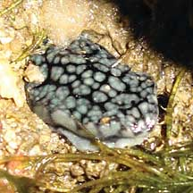
Pulau Tekukor, May 10
Photo shared by Neo Mei Lin on her
blog. |
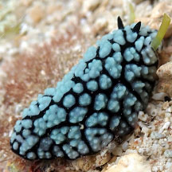
Terumbu Selegie, May 24
Photo shared by Loh Kok Sheng on facebook. |
|
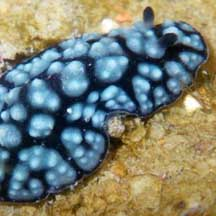
St. John's Island, Jul 09
Photo shared by Loh Kok Sheng on his
blog. |
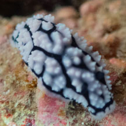
Pulau Jong, May 25
Photo shared byJayden Kang on facebook. |
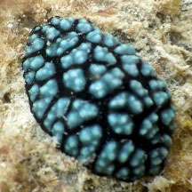
Terumbu Hantu, Jun 13
Photo shared by Loh Kok Sheng on flickr. |
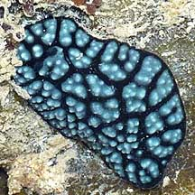
Pulau Semakau, Dec 08
Photo shared byLoh Kok Sheng on his
flickr. |
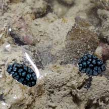
Pulau Semakau, Dec 08
Photo shared by Marcus Ng on his
flickr. |
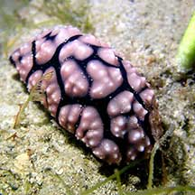
Terumbu Semakau, Apr 21
Photo shared by Jianlin Liu on facebook. |
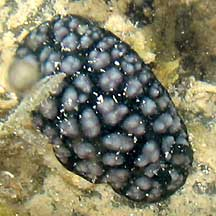
Terumbu Raya, May 10
Photo shared by Geraldine Lee on her
blog. |
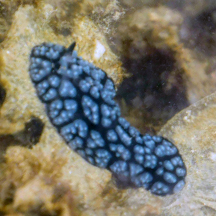
Terumbu Raya, Jun 15
Photo shared by Juria Toramae on facebook. |
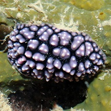
Terumbu Raya, Jul 11
Photo shared by Lok Kok Sheng on his
blog. |
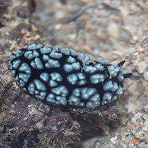
Terumbu Bemban, Jun 17
Photo shared by Abel Yeo on facebook. |
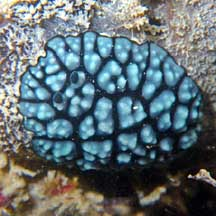
Terumbu
Bemban, Jun 10
Photo shared by Loh Kok Sheng on his
blog. |
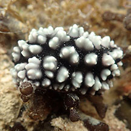
Terumbu Bemban, Jun 20
Photo shared by Dayna Cheah on facebook. |
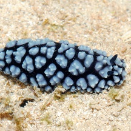
Beting Bemban Besar, May 11
Photo shared by Loh Kok Sheng on his
blog. |
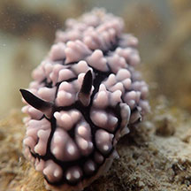
Beting Bemban Besar, Aug 18
Photo shared by Dayna Cheah on facebook. |
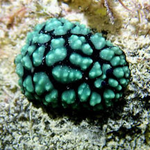
Beting Bemban Besar, Jun 19
Photo shared by Jianlin Liu on facebook. |
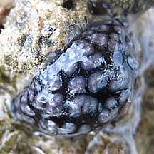
Terumbu Pempang Darat, Jun 10
Photo shared by James Koh on his
blog. |
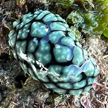
Terumbu
Pempang Tengah, May 25
Photo shared by Kelvin Yong on facebook.. |
|
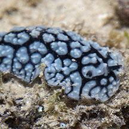
Terumbu Pempang Laut, Jul 16
Photo shared by Marcus Ng on facebook. |
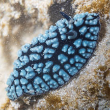
Terumbu Pempang
Laut, Jul 25
Photo shared by Marcus Ng on facebook. |
|
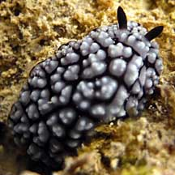
Pulau Biola, May 10 |
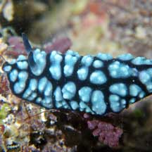
Pulau Pawai, Dec 09
Photo shared by Loh Kok Sheng on his
flickr. |
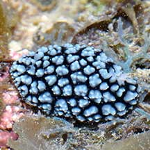
Pulau Salu, Apr 21
Photo shared by Loh Kok Sheng on facebook. |
Links
References
- Tan Siong
Kiat and Henrietta P. M. Woo, 2010 Preliminary
Checklist of The Molluscs of Singapore (pdf), Raffles
Museum of Biodiversity Research, National University of Singapore.
- Debelius,
Helmut, 2001. Nudibranchs
and Sea Snails: Indo-Pacific Field Guide
IKAN-Unterwasserachiv, Frankfurt. 321 pp.
- Wells, Fred
E. and Clayton W. Bryce. 2000. Slugs
of Western Australia: A guide to the species from the Indian to
West Pacific Oceans.
Western Australian Museum. 184 pp.
- Coleman,
Neville. 2001. 1001
Nudibranchs: Catalogue of Indo-Pacific Sea Slugs. Neville
Coleman's Underwater Geographic Pty Ltd, Australia.144pp.
- Humann, Paul
and Ned Deloach. 2010. Reef
Creature Identification: Tropical Pacific New World Publications.
497pp.
- Gosliner,
Terrence M., David W. Behrens and Gary C. Williams. 1996. Coral
Reef Animals of the Indo-Pacific: Animal life from Africa to Hawaii
exclusive of the vertebrates
Sea Challengers. 314pp.
|
|
|